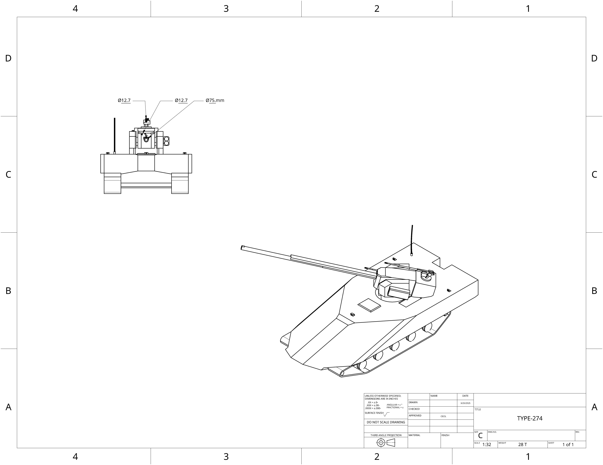

home
UCSC reconnaissance tank:
UCSC optionally manned ground reconnaissance vehicle, armed with a 75mm autocannon, with coaxial/roof mounted .50 caliber machine gun
and side mounted rocket drone launch tube.

- Main armament: UCSC 75mm AutoCannon(EMPAP)
- Secondary armerment:UCSC 120mm drone pod(x4 Drones)
- Secondary armerment: 12.7mm coaxial mount
- Secondary armerment: 12.7mm roof mount
- Shielding capabilities: X0.5 GiggaJoules
- Auxillary capabilities: Improved communication arrays, x4 HEEMP 120 Loitering munitions
- Armor(Hull): Front-400mm,Sides-100mm,Back-60mm
- Speed: 130 Kph Forward 125 Kph Back
- Tonnage: 28 Metric tons